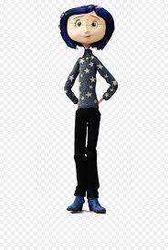
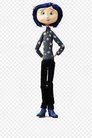
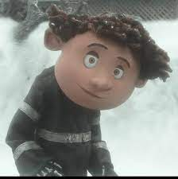
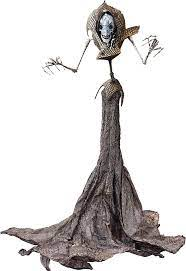

Coralines Hones
Coraline se presenta como una niña con la piel clara y ojos castaños claros. Ella luce cabello corto azul oscuro de un corte bob, destacándola del resto de los personajes de la película.

Coraline se presenta como una niña con la piel clara y ojos castaños claros. Ella luce cabello corto azul oscuro de un corte bob, destacándola del resto de los personajes de la película.
Wybie es bastante excéntrico y algo tímido, quiere que todo sea científico y tenga lógica, y gasta bromas bastante malas de humor pésimo, es algo nervioso debido a que frota sus dedos cuando ocurre algo que lo intimide. Pero es un buen amigo, leal y valiente, que siempre está dispuesto a ayudar (aunque sea a su manera) y que aunque no lo reconozca, quiere mucho a Coraline.
La Otra Madre es la principal antagonista de la película Coraline y la Puerta Secreta. Ella hizo un mundo perfecto para la joven llamada Coraline Jones en un intento de coser sus ojos con botones para tomar su alma y así vivir por muchos años mas.
